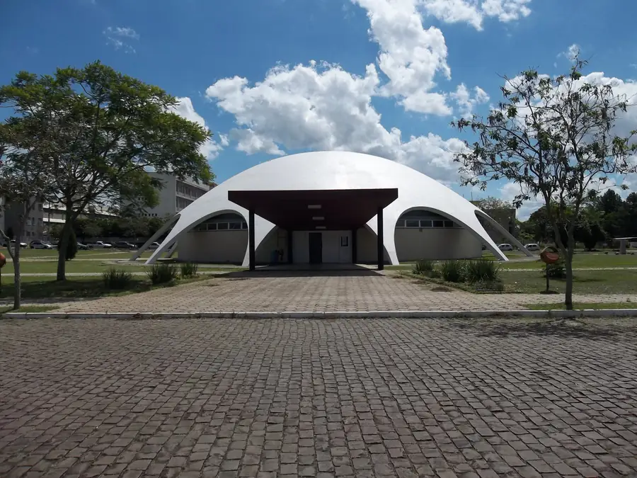

Por que Santa Maria atrai quem investe
Santa Maria é um polo universitário, com a UFSM e outras instituições, e tem forte presença militar, de serviços públicos e de saúde na região central do Rio Grande do Sul. Essa base de moradores, em grande parte inquilinos, gera demanda recorrente por locação, principalmente de imóveis compactos bem localizados.
Isso não elimina a vacância, mas ajuda a sustentar um mercado de locação ativo.
O resultado é um mercado que paga bem a quem investe para alugar, com entrada muito menor do que no litoral:
E o imóvel também valoriza: o m² de Santa Maria subiu 12,56% em 2025 (Índice FipeZAP). No Vibe, da Satre, em Camobi, a valorização do lançamento à entrega foi de quase 70% em cerca de 4 anos.
Veja quanto rende um aluguel em Santa Maria, com dados e comparação →
Estratégias mais comuns
Compacto para renda de aluguel
Apartamentos de 1 ou 2 dormitórios, bem localizados, voltados a estudantes, servidores e profissionais. A prioridade é localização e facilidade de locação.
Imóvel na planta para valorização
Compra-se no lançamento e vende-se ou aluga-se na entrega. Uma estratégia comum é usar o período de obra, com pagamento parcelado, para só depois colocar o imóvel para alugar: durante a obra quem paga é o comprador e, depois de entregue, o aluguel ajuda a cobrir as parcelas restantes. Funciona se a conta fechar e depende de boa construtora e boa região. Veja o guia de imóveis na planta.
Comprar, reformar e revender
Imóveis com preço abaixo do mercado por conta do estado de conservação. O ganho depende de comprar bem, reformar com controle de custo e vender no prazo previsto.
Como calcular a rentabilidade
Rentabilidade bruta anual = (aluguel mensal × 12) ÷ valor total investido. O valor investido inclui o preço do imóvel, ITBI, registro e eventual reforma.
Para chegar à rentabilidade líquida, desconte:
- Vacância: os meses em que o imóvel fica sem inquilino.
- Condomínio e IPTU nos períodos vagos.
- Manutenção e pequenos reparos.
- Taxa de administração, se houver imobiliária.
- Imposto de renda sobre o aluguel recebido.
Calcule o seu aluguel
Em Santa Maria, um bom aluguel rende acima de 0,5% do valor do imóvel por mês. Em Camobi, perto da UFSM, vemos de 0,5% a quase 1% ao mês, conforme o preço pago, a planta e o estado do imóvel. Coloque os números e veja onde o seu fica:
Conta bruta: aluguel × 12 ÷ valor do imóvel. Não inclui condomínio e IPTU dos meses vazios, manutenção e imposto de renda sobre o aluguel. Referência nacional: rentabilidade média de 6,13% ao ano, e de 6,71% nos imóveis de 1 dormitório (Índice FipeZAP Locação, out/2026).
Se alguém promete um retorno fechado sem mostrar essa conta, desconfie.
Quer ver isso aplicado ao seu caso? Fale com a gente. É gratuito e sem compromisso.
Custos e riscos
- Vacância: imóvel vazio custa e não rende.
- Inadimplência: reduza com garantia de locação bem escolhida, como seguro fiança, caução ou fiador.
- Liquidez: imóvel não se vende de um dia para o outro.
- Concentração: colocar boa parte do patrimônio em um único imóvel aumenta o risco.
- Manutenção: reformas e reparos acontecem, e o custo é seu.
Dá para financiar um investimento?
Dá, mas as condições são as do financiamento convencional, com entrada maior e juros de mercado. O Minha Casa Minha Vida é voltado para moradia própria, então não serve para investir. Em alguns casos o aluguel cobre boa parte da parcela, e só vale a pena se a conta fechar. Simulamos antes. Veja como funciona em financiamento imobiliário em Santa Maria.
Santa Maria ou litoral?
As duas valem a pena, por motivos diferentes. Em Santa Maria, o forte é a renda do aluguel todo mês, com entrada menor. No litoral, o forte é a valorização do patrimônio. Muitos clientes nossos têm os dois.
Como ajudamos
A gente mostra os números antes de qualquer decisão. A Kamila levanta oportunidades, negocia e avalia tecnicamente o imóvel, do estado da construção ao custo de uma eventual reforma, além de simular o financiamento.